창호종합기계CHANGHO INC
104. 서보탭핑기
055-327-4112
055-327-4112
CHANGHO INC · Servo Tapping Machine Accessories
서보탭핑기 전용 탭 콜렛 척을 규격별로 공급합니다
Tap Collet Chucks, Holders, Sleeves & Drill Adapters for Servo Tapping Machines
탭 콜렛 세트부터 MT 일체형 홀더 · 변환 슬리브 · 드릴척 아버 · ER 콜렛 척까지, 서보탭핑기에 물리는 부속 전 계열을 한 곳에 모았습니다. GT12(Φ19) · GT24(Φ30) · TC820(Φ31) 세 가지 척 규격을 모두 취급하며, JIS · ISO · DIN 3대 표준 탭이 그대로 장착됩니다.
판매 구성 23종GT12 · GT24 · TC820JIS · ISO · DIN
구성 한눈에 보기
스마트스토어에서 보기
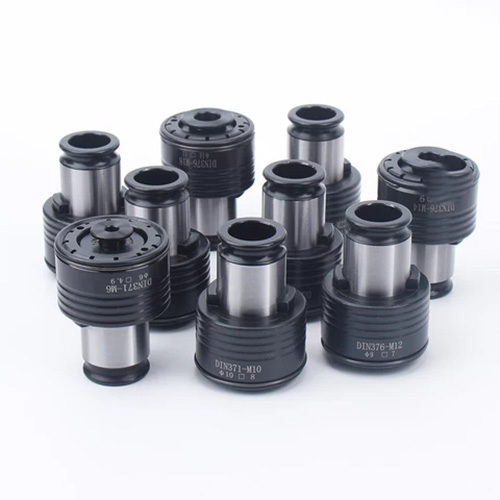
23종
상시 판매 구성
3규격
GT12 · GT24 · TC820
M2~M42
대응 탭 범위
3대 표준
JIS · ISO · DIN
Before You Choose
탭 콜렛척은 기계와 탭 사이에 들어갑니다
탭을 스핀들에 바로 물리는 것이 아닙니다. ① 기계 스핀들 → ② 홀더(아버) → ③ 콜렛척 → ④ 탭 순으로 이어지고, 이 중 ②와 ③이 이 페이지에서 다루는 부속입니다. 네 단계의 규격이 하나라도 어긋나면 물리지 않기 때문에, 고르실 때는 기계 쪽부터 거꾸로 확인하시는 편이 빠릅니다.
같은 기계라도 스핀들 마운트(모스 테이퍼·JT 테이퍼·스트레이트 자루·BT)에 따라 쓰는 홀더가 다르고, 홀더가 받는 척 규격도 GT12(Φ19) · GT24(Φ30) · TC820(Φ31) 세 갈래로 나뉩니다. 바로 아래 실물 두 컷과 다음 항목의 사진 넉 장이면 그 관계가 한눈에 들어옵니다.
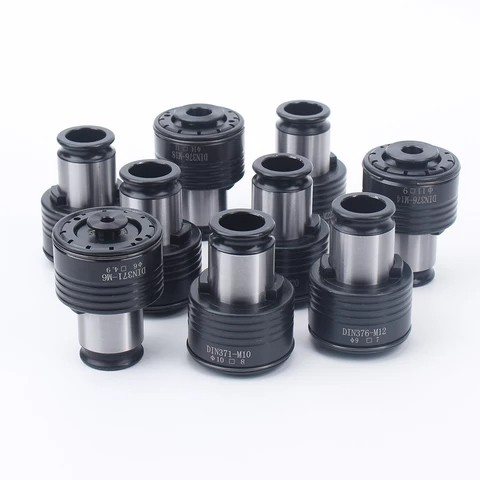
③ 콜렛척 — 탭 크기마다 하나씩 있습니다. 몸통에 클러치가 들어 있어 겉보기보다 두껍습니다.
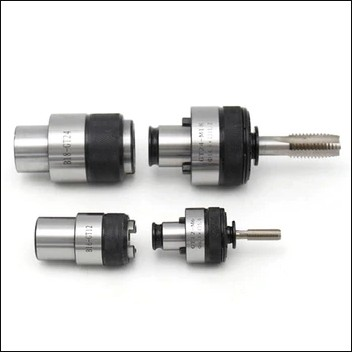
② 홀더 + ③ 콜렛척 + ④ 탭 — 물린 순서를 4방향에서 본 모습입니다.
How It Fits
스핀들에서 탭까지 네 단계
기계 · 실제 장착 상태 · 마운트 호환 관계 · 퀵체인지 구조 순입니다.
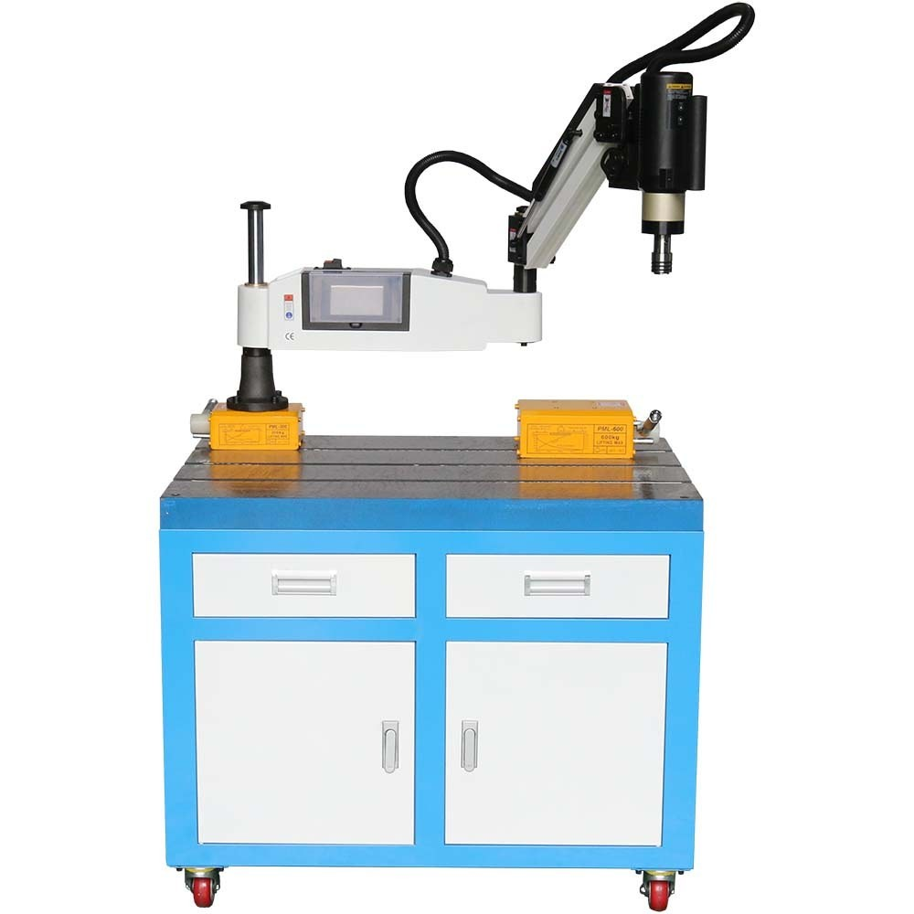
① 기계 — 서보탭핑기 본체입니다. 오른쪽 팔 끝의 스핀들에 아래 부속이 붙습니다.
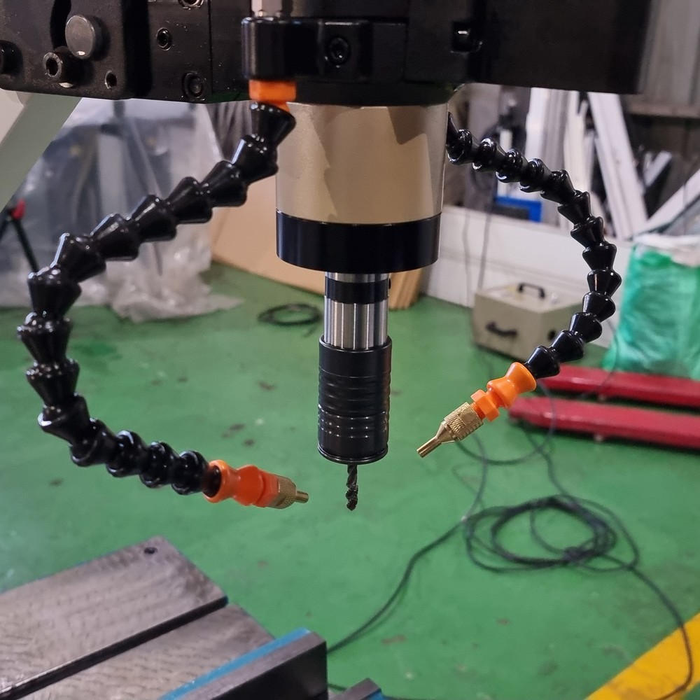
② 실제 장착 — 스핀들에 홀더를 끼우고, 그 끝에 콜렛척과 탭을 물린 상태입니다. 양옆 노즐은 절삭유 분사식(MO) 기종의 미스트 노즐입니다. (저희가 촬영)
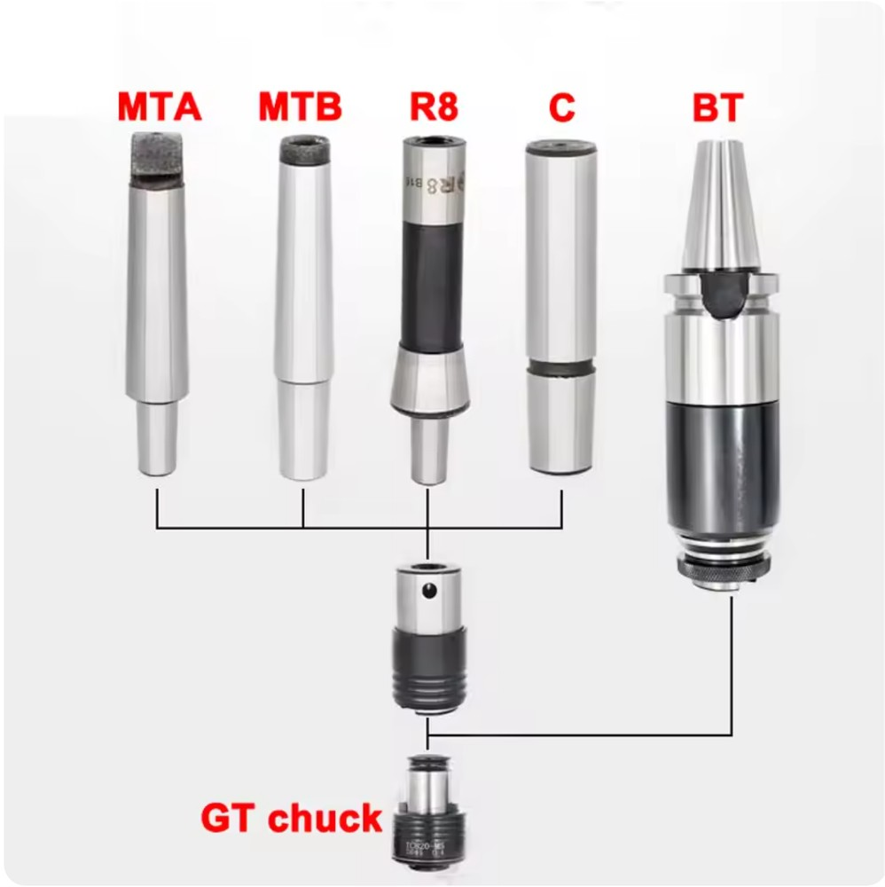
③ 마운트 호환 — MTA · MTB · R8 · 스트레이트(C) 자루는 가운데 탭핑 홀더를 거쳐 GT 척으로 이어지고, BT 홀더는 곧바로 GT 척에 연결됩니다. (제조사 제공 자료)
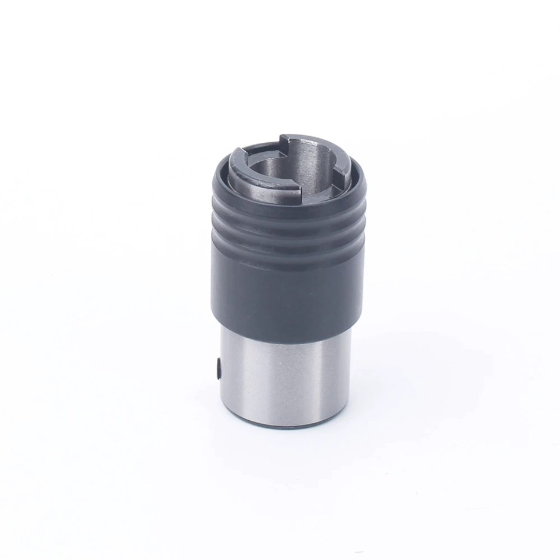
④ 퀵체인지 구조 — 홀더 아래쪽 널링된 슬리브를 당기면 콜렛척이 빠집니다. 탭 규격을 바꿀 때 공구가 필요 없습니다.
Why It Matters
부러진 탭은 빼내기가 더 어렵습니다
탭핑에서 가장 자주 나오는 문제는 가공 정밀도가 아니라 「탭이 구멍 안에서 부러졌다」입니다. 탭은 가공물보다 단단해서 드릴로 다시 가공되지 않고, 빼내려다 구멍을 키우거나 가공물을 폐기하게 되는 경우가 생깁니다. 저희가 쓰시는 탭 자루 표준과 소재를 확인해 맞는 척·콜렛 조합을 제안해 드립니다.
01
과부하가 걸리면 클러치가 먼저 공회전합니다막힘 구멍 바닥에 닿거나 칩이 물려 토크가 설정값을 넘으면 척 안의 클러치가 공회전합니다. 힘이 탭으로 더 전달되지 않는 지점에서 끊어 주므로 탭이 과부하를 그대로 받는 구간이 짧아집니다.
02
토크는 소재와 피치에 맞춰 조절합니다알루미늄과 스테인리스는 필요한 토크가 다릅니다. 외부 조절 링으로 그 값을 맞춰 두시면 같은 척으로 여러 소재에 쓰실 수 있습니다. 쓰시는 소재를 알려 주시면 저희가 초기 설정값을 제안해 드립니다.
03
퀵체인지 구조라 탭을 손으로 교환합니다슬리브를 당겨 빼고 끼우는 구조입니다. 탭 규격을 자주 바꾸는 작업일수록 교환 시간의 차이가 누적됩니다.
Three Things to Check
주문 전 세 가지만 확인하시면 됩니다
아래 세 가지가 정해지면 맞는 부속이 하나로 좁혀집니다.
01
스핀들 마운트 — 기계 쪽을 먼저 확인합니다모스 테이퍼(MT2 · MT3 · MT4) · JT 테이퍼(JT2 · JT4 · JT6) · 스트레이트 자루(Φ14 · Φ20) · BT 중 어느 것인지 확인합니다. 드릴링 머신·보링기라면 대개 모스 테이퍼입니다.
02
척 규격 — 홀더 쪽 삽입부를 확인합니다GT12는 삽입부 Φ19, GT24는 Φ30, TC820은 Φ31입니다. 쓰시던 콜렛의 삽입부를 버니어로 재시면 규격이 확인됩니다.
03
탭 자루 표준 — 탭 쪽 규격을 확인합니다국산·일산 탭은 JIS, 유럽산 수입 탭은 DIN 371/376입니다. 같은 M10이라도 자루 지름이 JIS 7.0 · DIN 10.0으로 달라 콜렛이 달라집니다. 자루 지름과 사각부를 재어 알려 주시면 저희가 맞는 콜렛을 골라 드립니다.
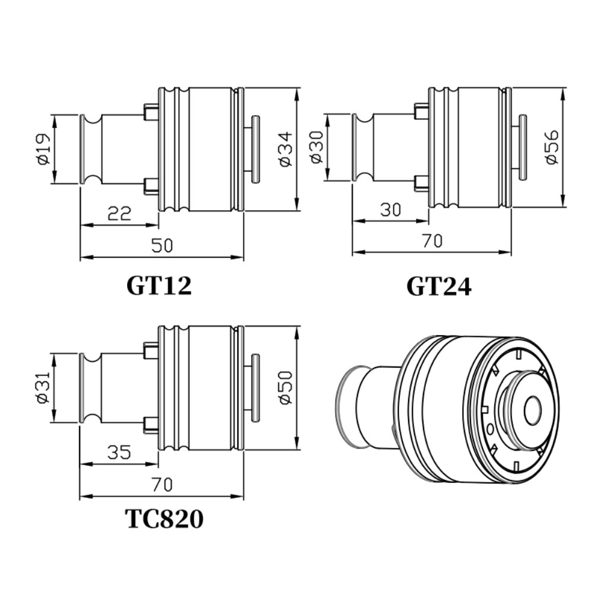
세 규격 치수 — GT12 삽입부 Φ19 · 외경 Φ34 · 전장 50 / GT24 Φ30 · Φ56 · 70 / TC820 Φ31 · Φ50 · 70. 쓰시던 콜렛의 삽입부를 재시면 어느 쪽인지 바로 나옵니다.
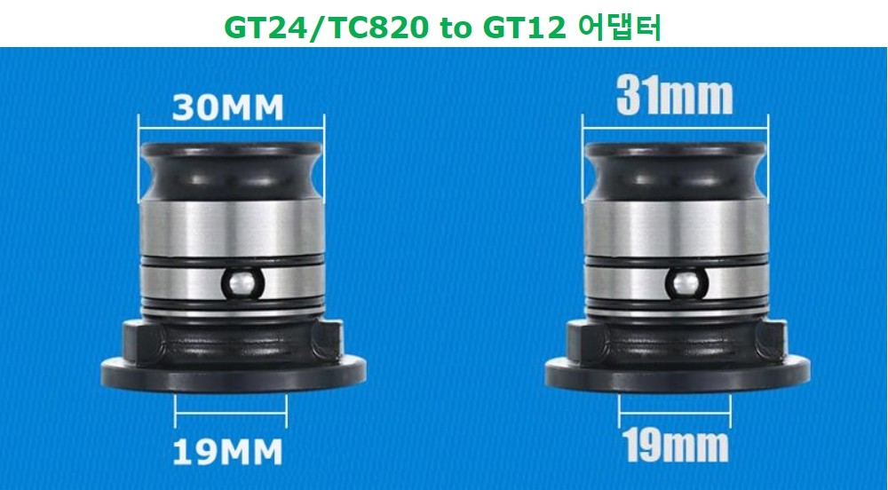
규격이 달라도 변환됩니다 — 큰 척(Φ30 · Φ31)을 쓰시더라도 변환 슬리브를 끼우면 GT12(Φ19) 콜렛을 그대로 물릴 수 있습니다.
세 가지를 고르기 어려우시면 스핀들 끝과 쓰시던 탭 사진 한 장만 보내 주십시오. 받아 보고 맞는 것을 골라 드립니다.
Cutting Conditions
탭 규격별 기초 드릴경 · 절삭 조건
M3부터 M32까지 피치와 기초 드릴 지름, 그리고 강(Steel) · 주물(FC) · 알루미늄(AL) 세 소재의 절삭속도 · 회전수 · 이송속도입니다. 탭이 부러지는 원인의 상당수가 기초 홀 지름이나 회전수가 맞지 않는 데서 나옵니다 — 콜렛척을 고르시기 전에 이 값부터 맞춰 보십시오.
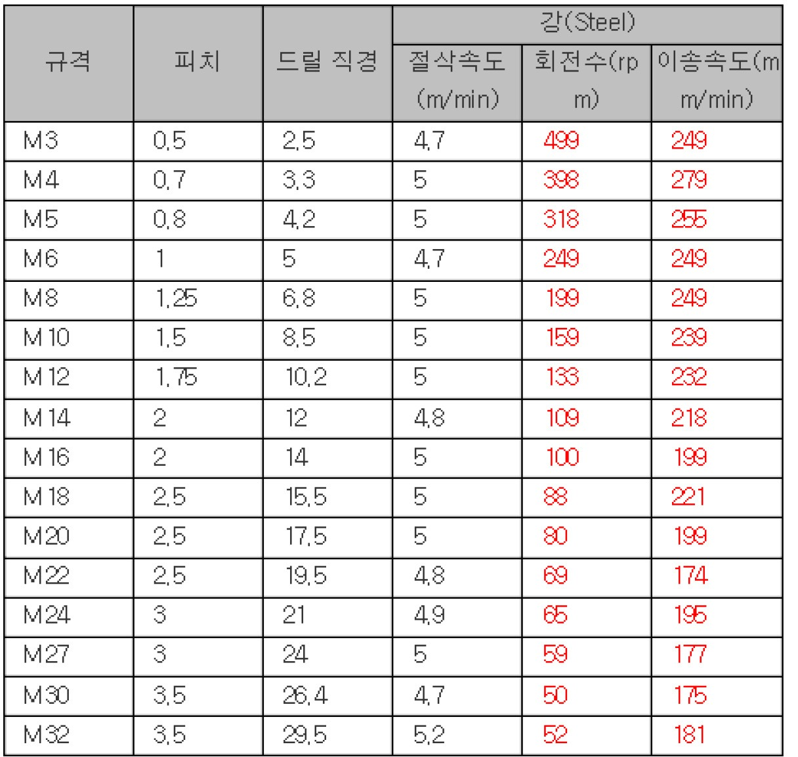
강 (Steel) — 규격 · 피치 · 기초 드릴 직경은 세 표 공통입니다. 일반 구조용강·탄소강 기준입니다.
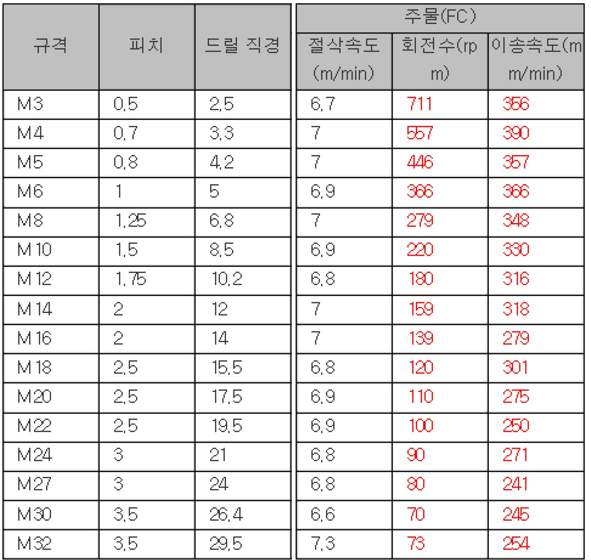
주물 (FC) — 규격 · 피치 · 기초 드릴 직경은 세 표 공통입니다. 회주철 기준입니다. 강보다 절삭속도를 조금 높게 잡습니다.
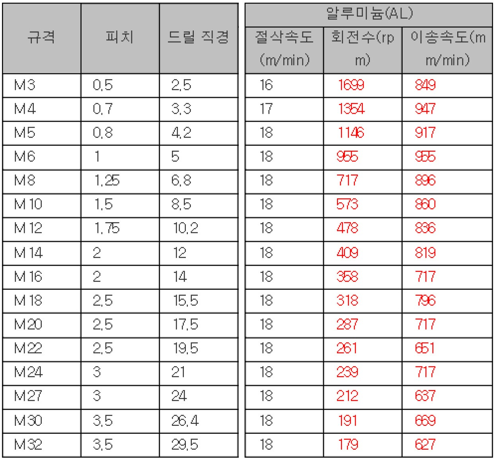
알루미늄 (AL) — 규격 · 피치 · 기초 드릴 직경은 세 표 공통입니다. 비철 기준입니다. 회전수를 가장 높게 잡습니다.
🔎 저희가 보유한 참고 자료입니다. 일반 참고값이며 탭 종류(핸드 · 기계 · 롤)와 소재 상태, 그리고 기계의 최대 회전수에 따라 달라집니다. 실제 조건은 시험 가공으로 확인해 주십시오.
Stock & Delivery
부속 하나 때문에 기계를 세우지 않도록
탭 콜렛척·홀더·슬리브는 기계 값에 비하면 작은 부품이지만, 맞는 것이 하나 없으면 그날 작업이 그대로 멈춥니다. 그래서 자주 나가는 규격은 늘 채워 두고 있습니다. 보유분은 당일 출고되고, 없는 규격은 확인해서 납기를 바로 알려 드립니다.
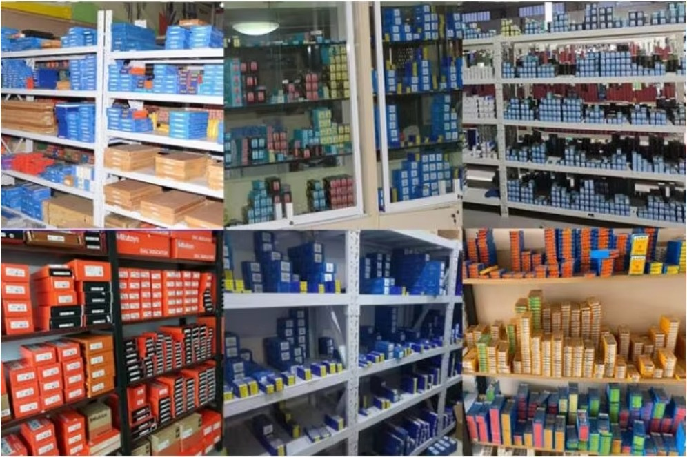
부자재 · 공구 보관 상태 — 저희 보관 현장입니다. (저희가 촬영)
Selection Guide
이런 작업엔 이 부속
쓰고 계신 탭핑기의 척 규격과 가공 대상에 따라 고르시면 됩니다. 척 규격이 확실치 않으시면 사진을 보내 주시면 확인해 드립니다.
M3~M16 소·중형 탭 — 일반 철·알루미늄01 GT12 세트
M6 이상 중·대형 탭 — 후판·구조물02·03 GT24 · TC820
배관용 PT 테이퍼 · 미국 인치 UNC 탭04 특수 콜렛
모스 테이퍼 스핀들에 직결하고 싶다05 MT 홀더
기존 드릴링 머신·보링기를 그대로 쓰고 싶다06 JT · 자루 홀더
대형 척을 빼지 않고 소형 탭도 쓰고 싶다07 변환 슬리브
탭 가공과 천공을 한 기계에서 하고 싶다08·09 드릴척 아버
정밀 드릴·면취·엔드밀까지 물리고 싶다10 ER 콜렛 척
Product Groups
10개 계열 · 23종 구성
카드를 누르시면 그 계열 설명으로 이동합니다.
Full Index
판매 구성 23종 한눈에
사진·품목·적용 척·가공 범위 순입니다. 세부 제원은 아래 계열별 설명에 있습니다.
| 품목 Item | 적용 척 | 규격 범위 | |
|---|---|---|---|
| GT12 토크클러치 탭 콜렛 세트WTM-GT12-JIS-SET | GT12 · Φ19 | M3 ~ M16 · 9EA | |
| GT24 토크클러치 탭 콜렛 세트WTM-GT24-JIS-SET | GT24 · Φ30 | M6 ~ M24 | |
| TC820 토크클러치 탭 콜렛 세트WTM-TC820-JIS-SET | TC820 · Φ31 | M6 ~ M24 | |
| GT12 관용 배관 탭 콜렛 세트WTM-GT12-PT-SET | GT12 · Φ19 | PT 1/8 · 1/4 | |
| TC820 관용 배관 탭 콜렛 세트WTM-TC820-PT-SET | TC820 · Φ31 | PT 1/8 ~ 1" | |
| TC820 미국 인치 탭 콜렛 세트WTM-TC820-UNC-SET | TC820 · Φ31 | UNC 1/4 ~ 7/8 | |
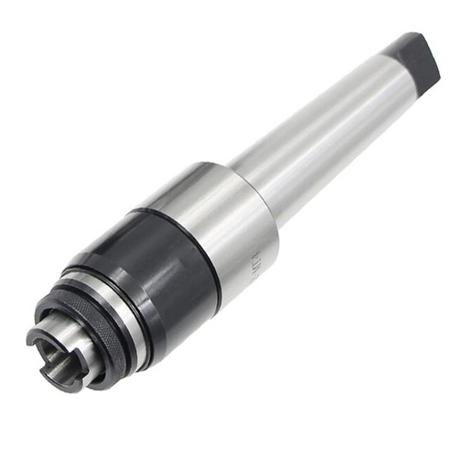 | GT12 콜렛척 홀더 아바 일체형WTM-MT2-GT12 | MT2 → GT12 | M2 ~ M16 |
| GT24 콜렛척 홀더 아바 일체형WTM-MT2-GT24 | MT2 → GT24 | M5 ~ M30 | |
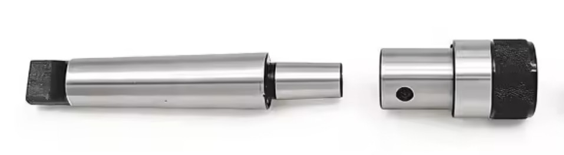 | TC820 콜렛척 홀더 + 아바WTM-MT3-TC820-A | MT3 → TC820 | M5 ~ M30 |
| TC820 콜렛척 홀더 아바 일체형WTM-MT2-TC820 | MT2 → TC820 | M5 ~ M30 | |
| TC820 콜렛척 홀더 아바 일체형WTM-MT3-TC820 | MT3 → TC820 | M5 ~ M30 | |
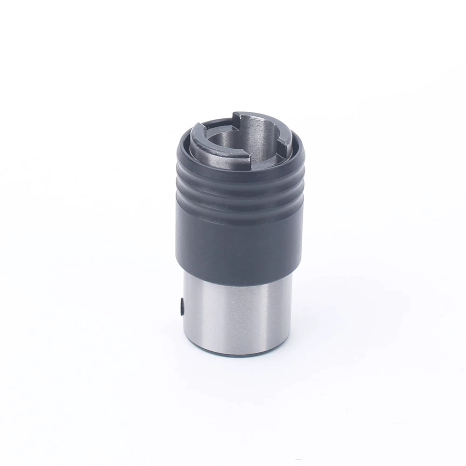 | 탭핑 콜렛척 홀더WTM-GT12-JT6 | JT.6 → GT12 | M2 ~ M20 |
| 탭핑 콜렛척 홀더WTM-GT12-JT2 | JT.2 → GT12 | M2 ~ M20 | |
| 결합형 세트WTM-MT2-GT12-ASM | MT2 → GT12 | M2 ~ M16 | |
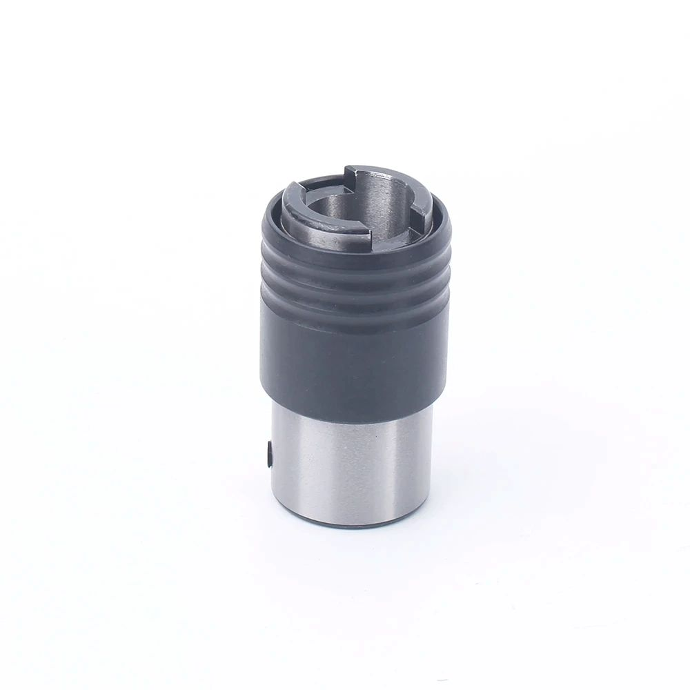 | 탭핑 머신 퀵 척WTM-JT4-TC820 | JT.4 → TC820 | M3 ~ M36 |
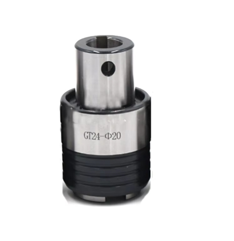 | GT12 키타입 탭핑 홀더WTM-GT12-D14 | Φ14 자루 → GT12 | M2 ~ M20 |
| TC820 키타입 탭핑 홀더WTM-TC820-D20 | Φ20 자루 → TC820 | M3 ~ M36 | |
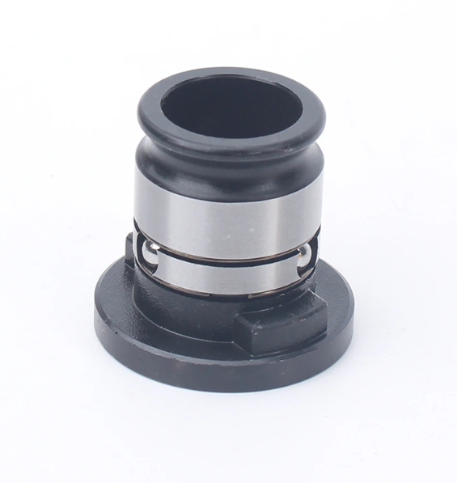 | 탭 콜렛 변환 슬리브 어댑터WTM-GT24-GT12 | GT24 → GT12 | M3 ~ M12 |
| 탭 콜렛 변환 슬리브 어댑터WTM-TC820-GT12 | TC820 → GT12 | M3 ~ M12 | |
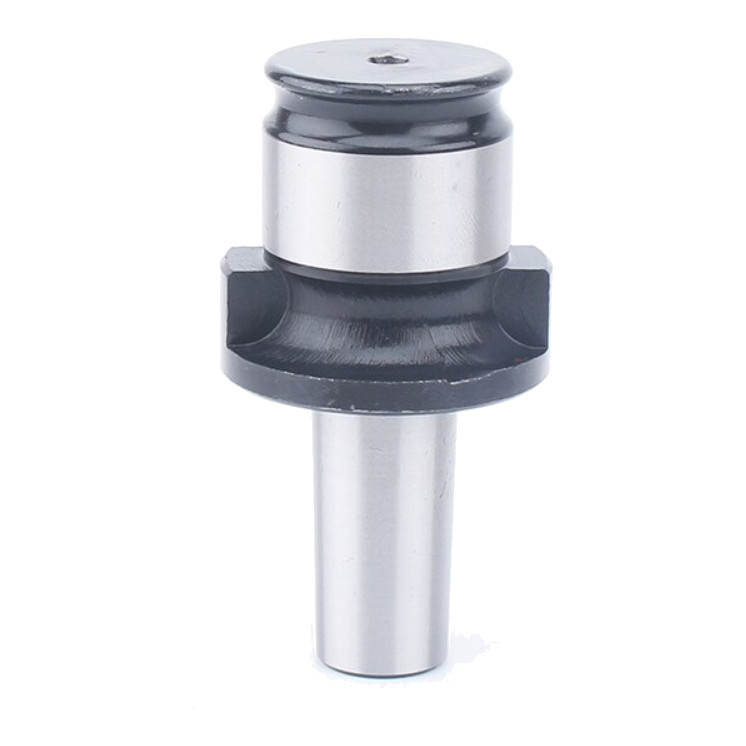 | 드릴척 어댑터 아버WTM-GT12-JT6-ARBOR | GT12/24/TC820 | 드릴 Φ1.0 ~ 16.0 |
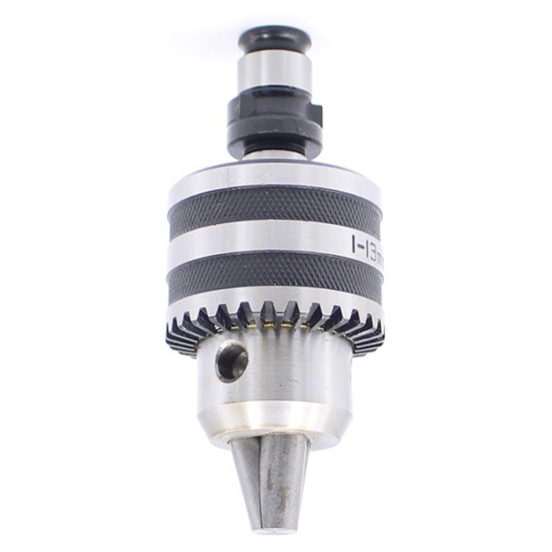 | 드릴척 + 원터치 아버 세트WTM-GT12-DK13-SET | GT12 · Φ19 | 드릴 Φ1.5 ~ 13.0 |
| 드릴척 + 원터치 아버 세트WTM-TC820-DK13-SET | TC820 · Φ31 | 드릴 Φ1.5 ~ 13.0 | |
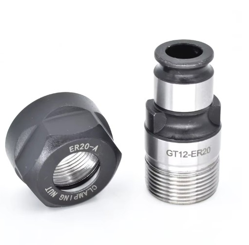 | GT / TC 원터치 ER 드릴 콜렛 척WTM-GT-ER-SERIES | GT12/24/TC820 | ER16 ~ ER32 |
Group 1 of 10
01GT12 탭 콜렛 세트
Φ19mm GT12 척에 물리는 안전 클러치 콜렛입니다. M3부터 M16까지 9종을 한 세트로 묶어 국산·일산(JIS)은 물론 유럽산 수입 탭(DIN 371/376)까지 자루 규격을 가리지 않고 장착됩니다.
M3~M16 · 9EA 구성 GT12 토크클러치 탭 콜렛 세트
WTM-GT12-JIS-SET
국산·일산부터 유럽산 수입 탭까지 — GT12 전 규격 대응 안전 클러치 콜렛 세트
| 모델명 | WTM-GT12-SERIES |
|---|---|
| 품목코드 | 104005001 |
| 적용 척 | GT12 · Φ19mm 퀵체인지 |
| 외경 | Φ34 mm |
| 삽입부 | Φ19 mm × 22 mm |
| 전장 | 50 mm |
| 가공 범위 | M3 ~ M16 |
| 세트 구성 | 9 EA |
| 지원 표준 | JIS · ISO · DIN 371/376 |
| 구동 | 안전 클러치 · 토크 조절식 |
| 원산지 | 중국산 |
| 탭 규격 | JIS 자루Φ × 사각□ |
|---|---|
| M3 | 4.0 × 3.2 |
| M4 | 5.0 × 4.0 |
| M5 | 5.5 × 4.5 |
| M6 | 6.0 × 4.5 |
| M8 | 6.2 × 5.0 |
| M10 | 7.0 × 5.5 |
| M12 | 8.5 × 6.5 |
| M14 | 10.5 × 8.0 |
| M16 | 12.5 × 10.0 |
Group 2 of 10
02GT24 탭 콜렛 세트
Φ30mm GT24 척 전용입니다. M6부터 대형 탭까지 두루 쓰이며, 세트 구성은 가공하시는 규격에 맞춰 선택하시면 됩니다. 클러치 내장이라 막힘 구멍에서 과부하가 걸려도 탭이 부러지지 않습니다.
M6~M24 대구경 GT24 토크클러치 탭 콜렛 세트
WTM-GT24-JIS-SET
대형 탭 가공의 표준 — GT24 규격 고강도 안전 클러치 콜렛 세트
| 모델명 | WTM-GT24-SERIES |
|---|---|
| 품목코드 | 104005002 |
| 적용 척 | GT24 · Φ30mm 퀵체인지 |
| 외경 | Φ56 mm |
| 삽입부 | Φ30 mm × 35 mm |
| 전장 | 70 mm |
| 가공 범위 | M6 ~ M24 |
| 지원 표준 | JIS · ISO · DIN 371/376 |
| 구동 | 안전 클러치 · 토크 조절식 |
| 원산지 | 중국산 |
| 탭 규격 | JIS 자루Φ × 사각□ |
|---|---|
| M6 | 6.0 × 4.5 |
| M8 | 6.2 × 5.0 |
| M10 | 7.0 × 5.5 |
| M12 | 8.5 × 6.5 |
| M14 | 10.5 × 8.0 |
| M16 | 12.5 × 10.0 |
| M18 | 14.0 × 11.0 |
| M20 | 15.0 × 12.0 |
| M22 | 17.0 × 13.0 |
| M24 | 19.0 × 15.0 |
| M27 | 20.0 × 15.0 |
| M30 | 23.0 × 17.0 |
🔎 M32 · M36 자루 규격은 사내 원자료에 수치가 없어 표기하지 않았습니다. 해당 규격이 필요하시면 문의 주시면 확인해 드립니다.
Group 3 of 10
03TC820 탭 콜렛 세트
Φ31mm TC820 척 전용입니다. GT24와 가공 범위는 같고 척 삽입부 규격이 다릅니다. 쓰고 계신 탭핑기의 척이 어느 쪽인지 확인 후 고르시면 됩니다.
M6~M24 대구경 TC820 토크클러치 탭 콜렛 세트
WTM-TC820-JIS-SET
TC820 규격의 고강도 파워 — 글로벌 전 규격 탭 대응 콜렛 세트
| 모델명 | WTM-TC820-SERIES |
|---|---|
| 품목코드 | 104005003 |
| 적용 척 | TC820 · Φ31mm 퀵체인지 |
| 외경 | Φ50 mm |
| 삽입부 | Φ31 mm × 35 mm |
| 전장 | 70 mm |
| 가공 범위 | M6 ~ M24 |
| 지원 표준 | JIS · ISO · DIN 371/376 |
| 구동 | 안전 클러치 · 토크 조절식 |
| 원산지 | 중국산 |
| 탭 규격 | JIS 자루Φ × 사각□ |
|---|---|
| M6 | 6.0 × 4.5 |
| M8 | 6.2 × 5.0 |
| M10 | 7.0 × 5.5 |
| M12 | 8.5 × 6.5 |
| M14 | 10.5 × 8.0 |
| M16 | 12.5 × 10.0 |
| M18 | 14.0 × 11.0 |
| M20 | 15.0 × 12.0 |
| M22 | 17.0 × 13.0 |
| M24 | 19.0 × 15.0 |
| M27 | 20.0 × 15.0 |
| M30 | 23.0 × 17.0 |
🔎 M32 · M36 자루 규격은 사내 원자료에 수치가 없어 표기하지 않았습니다. 해당 규격이 필요하시면 문의 주시면 확인해 드립니다.
Group 4 of 10
04PT 배관 · UNC 인치 특수 콜렛
미터 나사가 아닌 관용 테이퍼(PT)와 미국 유니파이(UNC) 탭 전용 콜렛입니다. 유압 블록·매니폴드·배관 피팅 가공에 쓰입니다.
PT 1/8 · 1/4 GT12 관용 배관 탭 콜렛 세트
PT 1/8 ~ 1" 6종 TC820 관용 배관 탭 콜렛 세트
UNC 1/4 ~ 7/8 9종 TC820 미국 인치 탭 콜렛 세트
WTM-GT12-PT-SET
배관용 PT 테이퍼 탭 전용 — 과부하 보호 클러치 내장 콜렛 2종 세트
| 모델명 | wtm-GT12-PT-set |
|---|---|
| 품목코드 | 104005004001 |
| 적용 척 | GT12 · Φ19mm 퀵체인지 |
| 외경 | Φ34 mm |
| 삽입부 | Φ19 mm × 22 mm |
| 전장 | 50 mm |
| 세트 구성 | PT 1/8 · PT 1/4 (2종) |
| 원산지 | 중국산 |
| 규격 | 자루 Φ | 사각 □ |
|---|---|---|
| PT 1/8 | 8.0 mm | 6.0 mm |
| PT 1/4 | 11.0 mm | 9.0 mm |
WTM-TC820-PT-SET
PT 1/8 부터 1인치까지 — 대구경 배관 탭 전용 콜렛 6종 세트
| 모델명 | wtm-TC820-PT-set |
|---|---|
| 품목코드 | 104005004002 |
| 적용 척 | TC820 · Φ31mm 퀵체인지 |
| 외경 | Φ50 mm |
| 삽입부 | Φ31 mm × 35 mm |
| 전장 | 70 mm |
| 세트 구성 | PT 1/8 ~ PT 1" (6종) |
| 원산지 | 중국산 |
| 규격 | 자루 Φ | 사각 □ |
|---|---|---|
| PT 1/8 | 8.0 mm | 6.0 mm |
| PT 1/4 | 11.0 mm | 9.0 mm |
| PT 3/8 | 14.0 mm | 11.0 mm |
| PT 1/2 | 18.0 mm | 14.0 mm |
| PT 3/4 | 23.0 mm | 17.0 mm |
| PT 1" | 26.0 mm | 21.0 mm |
WTM-TC820-UNC-SET
미국 유니파이 인치 규격 탭 전용 — 유압·기계 부품 가공용 콜렛 9종 세트
| 모델명 | wtm-TC820-unc-set |
|---|---|
| 품목코드 | 104005004003 |
| 적용 척 | TC820 · Φ31mm 퀵체인지 |
| 외경 | Φ50 mm |
| 삽입부 | Φ31 mm × 35 mm |
| 전장 | 70 mm |
| 세트 구성 | UNC 1/4 ~ UNC 7/8 (9종) |
| 원산지 | 중국산 |
| 규격 | 자루 Φ | 사각 □ |
|---|---|---|
| UNC 1/4 | 6.0 mm | 4.5 mm |
| UNC 5/16 | 6.1 mm | 5.0 mm |
| UNC 3/8 | 7.5 mm | 5.5 mm |
| UNC 7/16 | 8.0 mm | 6.0 mm |
| UNC 1/2 | 9.0 mm | 7.0 mm |
| UNC 9/16 | 10.5 mm | 8.0 mm |
| UNC 5/8 | 12.0 mm | 9.0 mm |
| UNC 3/4 | 14.0 mm | 11.0 mm |
| UNC 7/8 | 17.0 mm | 13.0 mm |
Group 5 of 10
05MT 일체형 콜렛척 홀더
모스 테이퍼(MT) 스핀들에 직결하는 홀더입니다. 아버 연결부의 누적 오차가 없어 떨림이 줄고, 신축 완충 구조가 회전과 이송의 속도 차를 흡수해 나사산 손상을 막습니다.
MT2 스핀들 직결 GT12 콜렛척 홀더 아바 일체형
MT2 스핀들 직결 GT24 콜렛척 홀더 아바 일체형
MT3 스핀들 · 조립형 TC820 콜렛척 홀더 + 아바
MT2 스핀들 직결 TC820 콜렛척 홀더 아바 일체형
MT3 스핀들 직결 TC820 콜렛척 홀더 아바 일체형
WTM-MT2-GT12
모스 테이퍼 스핀들에 직결 — 누적 오차 없는 일체형 GT12 탭핑 척 홀더
| 모델명 | MT2-GT12 |
|---|---|
| 품목코드 | 104005005001 |
| 가공 범위 | M2 ~ M16 |
| 스핀들 | MT2 · 14.034/18.03 |
| 콜렛 내경 ∅d | 19 mm |
| 몸체 외경 ∅D | 46 mm |
| 몸체 길이 L | 110 mm |
| 완충 F2 · F1 | 15 mm / 15 mm |
| 호환 콜렛 | GT12 · TC312 |
| 원산지 | 중국산 |
WTM-MT2-GT24
중경 탭 전용 — MT2 직결 GT24 일체형 탭핑 척 홀더
| 모델명 | MT2-GT24 |
|---|---|
| 품목코드 | 104005005002 |
| 가공 범위 | M5 ~ M30 |
| 스핀들 | MT2 · 14.034/18.03 |
| 콜렛 내경 ∅d | 30 mm |
| 몸체 외경 ∅D | 66 mm |
| 몸체 길이 L | 130 mm |
| 완충 F2 · F1 | 10 mm / 15 mm |
| 호환 콜렛 | GT24 |
| 원산지 | 중국산 |
WTM-MT3-TC820-A
MT3 스핀들 대응 — 아바와 척을 조립해 쓰는 TC820 탭핑 척 홀더
| 모델명 | MT3-TC820 조립형 |
|---|---|
| 품목코드 | 104005005003 |
| 가공 범위 | M5 ~ M30 |
| 스핀들 | MT3 · 19.107/24.07 |
| 콜렛 내경 ∅d | 31 mm |
| 몸체 외경 ∅D | 66 mm |
| 몸체 길이 L | 130 mm |
| 완충 F2 · F1 | 10 mm / 15 mm |
| 호환 콜렛 | TC820 |
| 원산지 | 중국산 |
WTM-MT2-TC820
MT2 직결 일체형 — 누적 오차를 없앤 TC820 탭핑 척 홀더
| 모델명 | MT2-TC820 |
|---|---|
| 품목코드 | 104005005004 |
| 가공 범위 | M5 ~ M30 |
| 스핀들 | MT2 · 14.034/18.03 |
| 콜렛 내경 ∅d | 31 mm |
| 몸체 외경 ∅D | 66 mm |
| 몸체 길이 L | 130 mm |
| 완충 F2 · F1 | 10 mm / 15 mm |
| 호환 콜렛 | TC820 |
| 원산지 | 중국산 |
WTM-MT3-TC820
중형 드릴링 머신 표준 MT3 — 일체형 TC820 탭핑 척 홀더
| 모델명 | MT3-TC820 일체형 |
|---|---|
| 품목코드 | 104005005005 |
| 가공 범위 | M5 ~ M30 |
| 스핀들 | MT3 · 19.107/24.07 |
| 콜렛 내경 ∅d | 31 mm |
| 몸체 외경 ∅D | 66 mm |
| 몸체 길이 L | 130 mm |
| 완충 F2 · F1 | 10 mm / 15 mm |
| 호환 콜렛 | TC820 |
| 원산지 | 중국산 |
주문 대응 규격 — MT 홀더 16 모델
아래는 제조사 라인업 전체입니다. 위 5종은 상시 보유분이고, 나머지는 주문 제작으로 만들어 드립니다.
| 모델 | 가공 범위 | 스핀들 대경 | 콜렛 내경 ∅d | 몸체 길이 L | 구조 |
|---|---|---|---|---|---|
| MT2-GT12 | M3~M16 | 17.780 | 19 | 110 | 고정형 |
| MT3-GT12 | M3~M16 | 23.825 | 19 | 110 | 고정형 |
| MT4-GT12 | M3~M16 | 31.267 | 19 | 110 | 고정형 |
| MT3-GT24 | M5~M30 | 23.825 | 30 | 130 | 고정형 |
| MT4-GT24 | M5~M30 | 31.267 | 30 | 130 | 고정형 |
| MT5-GT24 | M5~M30 | 44.399 | 30 | 130 | 고정형 |
| MT2-GT12 | M2~M16 | — | 19 | 110 | 신축 완충 (∅D 46 · F 15/15) |
| MT3-GT12 | M2~M16 | — | 19 | 110 | 신축 완충 (∅D 46 · F 15/15) |
| MT4-GT12 | M2~M16 | — | 19 | 110 | 신축 완충 (∅D 46 · F 15/15) |
| MT2-GT24 | M5~M30 | — | 30 | 130 | 신축 완충 (∅D 66 · F 10/15) |
| MT3-GT24 | M5~M30 | — | 30 | 130 | 신축 완충 (∅D 66 · F 10/15) |
| MT4-GT24 | M5~M30 | — | 30 | 130 | 신축 완충 (∅D 66 · F 10/15) |
| MT2-TC820 | M5~M30 | — | 31 | 130 | 신축 완충 (∅D 66 · F 10/15) |
| MT3-TC820 | M5~M30 | — | 31 | 130 | 신축 완충 (∅D 66 · F 10/15) |
| MT4-TC820 | M5~M30 | — | 31 | 130 | 신축 완충 (∅D 66 · F 10/15) |
| MT4-GT42 | M24~M42 | — | 45 | 165 | 신축 완충 (∅D 78 · F 10/10) |
Group 6 of 10
06JT 테이퍼 · 스트레이트 자루 홀더
드릴척 아버(JT 테이퍼)나 일반 드릴척에 물려서 쓰는 변환 홀더입니다. 탭핑 전용기가 없어도 기존 보링기·드릴링 머신에서 원터치 탭 교체를 그대로 쓰실 수 있습니다.
JT6 테이퍼 → GT12 탭핑 콜렛척 홀더
JT2 테이퍼 → GT12 탭핑 콜렛척 홀더
GT12 홀더 + MT2 아바 결합형 세트
JT4 테이퍼 → TC820 탭핑 머신 퀵 척
Φ14 스트레이트 자루 GT12 키타입 탭핑 홀더
Φ20 스트레이트 자루 TC820 키타입 탭핑 홀더
WTM-GT12-JT6
드릴척 아버의 JT6 마운트를 GT12 원터치 탭핑 시스템으로 즉시 변환
| 모델명 | GT12-JT6 |
|---|---|
| 품목코드 | 104005006001 |
| 가공 범위 | M2 ~ M20 |
| 입력부 D1 | JT.6 · 17.17 mm |
| 몸통 외경 D | 28 mm |
| 콜렛 내경 D2 | 19 mm |
| 플랜지경 D3 | 33 mm |
| 전장 L | 65 mm |
| 콜렛부 길이 L1 | 33 mm |
| 잠금·볼 | 5 / 5 |
| 호환 콜렛 | GT12 · G3 · JJ3 · TC312 |
| 원산지 | 중국산 |
WTM-GT12-JT2
소형 드릴척 아버의 JT2 마운트 전용 — GT12 원터치 변환 홀더
| 모델명 | GT12-JT2 |
|---|---|
| 품목코드 | 104005006002 |
| 가공 범위 | M2 ~ M20 |
| 입력부 D1 | JT.2 · 14.199 mm |
| 몸통 외경 D | 28 mm |
| 콜렛 내경 D2 | 19 mm |
| 플랜지경 D3 | 33 mm |
| 전장 L | 65 mm |
| 콜렛부 길이 L1 | 33 mm |
| 잠금·볼 | 5 / 5 |
| 호환 콜렛 | GT12 · G3 · JJ3 · TC312 |
| 원산지 | 중국산 |
WTM-MT2-GT12-ASM
GT12 콜렛척 홀더와 MT2 아바를 결합해 모스 테이퍼 스핀들에 바로 장착
| 모델명 | MT2-GT12 결합형 |
|---|---|
| 품목코드 | 104005006003 |
| 가공 범위 | M2 ~ M16 |
| 스핀들 | MT2 · 14.034/18.03 |
| 콜렛 내경 | 19 mm |
| 호환 콜렛 | GT12 · TC312 |
| 원산지 | 중국산 |
WTM-JT4-TC820
JT4 마운트 스핀들을 TC820 대구경 탭핑 시스템으로 변환
| 모델명 | WTM-JT4-TC820 |
|---|---|
| 품목코드 | 104005006004 |
| 입력부 마운트 | JT.4 · 28.550/26.346 |
| 출력부 | TC820 · Φ31mm |
| 가공 범위 | M3 ~ M36 |
| 호환 콜렛 | TC820 |
| 원산지 | 중국산 |
WTM-GT12-D14
Φ14 스트레이트 자루 + 키홈 — 드릴척에 물려 쓰는 GT12 탭핑 홀더
| 모델명 | GT12-D14 |
|---|---|
| 품목코드 | 104005006005 |
| 가공 범위 | M2 ~ M20 |
| 자루 D1 | Φ14 mm 키홈 |
| 몸통 외경 D | 28 mm |
| 콜렛 내경 D2 | 19 mm |
| 플랜지경 D3 | 33 mm |
| 전장 L | 68 mm |
| 콜렛부 길이 L1 | 33 mm |
| 잠금·볼 | 5 / 5 |
| 호환 콜렛 | GT12 · G3 · JJ3 · TC312 |
| 원산지 | 중국산 |
WTM-TC820-D20
Φ20 스트레이트 자루 + 키홈 — 대구경 TC820 탭핑 홀더
| 모델명 | TC820-D20 |
|---|---|
| 품목코드 | 104005006006 |
| 가공 범위 | M3 ~ M36 |
| 자루 D1 | Φ20 mm 키홈 |
| 몸통 외경 D | 40 mm |
| 콜렛 내경 D2 | 31 mm |
| 플랜지경 D3 | 50 mm |
| 전장 L | 85 mm |
| 콜렛부 길이 L1 | 52 mm |
| 잠금·볼 | 6 / 6 |
| 호환 콜렛 | TC820 |
| 원산지 | 중국산 |
Group 7 of 10
07탭 콜렛 변환 슬리브
대형 척을 기계에서 빼지 않고 소형 탭 가공으로 전환하는 변환 링입니다. 원터치 볼 잠금이라 공구 없이 끼우고 뺍니다.
GT24 → GT12 탭 콜렛 변환 슬리브 어댑터
TC820 → GT12 탭 콜렛 변환 슬리브 어댑터
WTM-GT24-GT12
대형 척을 해체하지 않고 소형 탭 가공으로 3초 만에 전환하는 변환 링
| 모델명 | WTM-GT24-GT12 |
|---|---|
| 품목코드 | 104005007001 |
| 상위 척 외경 D | Φ30 mm |
| 콜렛 내경 d | Φ19 mm |
| 적용 상위 척 | GT24 · Φ30mm |
| 변환 적용 콜렛 | GT12 (TC312) 계열 |
| 전환 후 범위 | M3 ~ M12 |
| 체결 방식 | 원터치 볼 잠금 |
| 표면 처리 | 침탄 열처리 · 방청 코팅 |
| 원산지 | 중국산 |
WTM-TC820-GT12
TC820 대형 척 그대로 — 소형 탭 가공을 겸하게 하는 변환 링
| 모델명 | WTM-TC820-GT12 |
|---|---|
| 품목코드 | 104005007002 |
| 상위 척 외경 D | Φ31 mm |
| 콜렛 내경 d | Φ19 mm |
| 적용 상위 척 | TC820 · Φ31mm |
| 변환 적용 콜렛 | GT12 (TC312) 계열 |
| 전환 후 범위 | M3 ~ M12 |
| 체결 방식 | 원터치 볼 잠금 |
| 표면 처리 | 침탄 열처리 · 방청 코팅 |
| 원산지 | 중국산 |
Group 8 of 10
08드릴척 어댑터 아버
탭핑기 척에 드릴척을 물리는 어댑터입니다. 탭 가공과 천공을 한 기계에서 처리하므로 가공물을 다른 기계로 옮기며 생기는 위치 오차가 없습니다.
GT12 · GT24 · TC820 → JT6 드릴척 어댑터 아버
WTM-GT12-JT6-ARBOR
탭핑기에 드릴척을 원터치로 — 별도 기계 이동 없이 천공까지 처리
| 모델명 | WTM-GT12-JT6 / GT24-JT6 / TC820-JT6 |
|---|---|
| 품목코드 | 104005008 |
| 샹크 외경 D | Φ19 mm (GT12) / Φ30 mm (GT24) / Φ31 mm (TC820) |
| 출력부 마운트 | JT.6 · 17.170/15.852 |
| 적용 드릴척 | JT6 · 13 / 16 mm |
| 드릴 비트 | Φ1.0 ~ 16.0 mm |
| 재질 | 고탄소 합금강 · 침탄 연삭 |
| 원산지 | 중국산 |
대응 규격 3모델
형상은 같고 탭핑기 쪽 샹크 규격만 다릅니다. 쓰시는 척에 맞춰 고르시면 됩니다.
| 모델 | 관리코드 | 샹크 외경 D | 출력 마운트 | 적용 드릴척 |
|---|---|---|---|---|
| WTM-GT12-JT6 | 104005008-1 | Φ19 mm | JT.6 | 13 / 16 mm |
| WTM-GT24-JT6 | 104005008-2 | Φ30 mm | JT.6 | 13 / 16 mm |
| WTM-TC820-JT6 | 104005008-3 | Φ31 mm | JT.6 | 13 / 16 mm |
Group 9 of 10
09키레스 드릴척 + 아버 세트
드릴척과 어댑터 아버를 조립해 바로 쓰실 수 있는 완성 세트입니다. 드릴척 렌치 없이 손으로 돌려 비트를 물리고 풉니다.
GT12 + 키레스 13mm 드릴척 + 원터치 아버 세트
TC820 + 키레스 16mm 드릴척 + 원터치 아버 세트
WTM-GT12-DK13-SET
렌치 없이 손으로 강력 체결 — 탭핑기 전용 키레스 드릴척 올인원 세트
| 모델명 | WTM-GT12-DK13-SET |
|---|---|
| 품목코드 | 104005009002 |
| 적용 스핀들 | GT12 |
| 샹크 외경 D | Φ19 mm |
| 클램핑 범위 | 1.5 mm ~ 13.0 mm |
| 체결 마운트 | JT.6 / B16 |
| 구성 | 키레스 드릴척 13mm + 아버 1조 |
| 재질 | 고탄소 합금강 정밀 연삭 |
| 원산지 | 중국산 |
WTM-TC820-DK13-SET
TC820 대구경 스핀들 전용 — 키레스 드릴척 + 아버 조립 완성형 세트
| 모델명 | WTM-TC820-DK13-SET |
|---|---|
| 품목코드 | 104005009003 |
| 적용 스핀들 | TC820 |
| 샹크 외경 D | Φ31 mm |
| 클램핑 범위 | 1.5 mm ~ 13.0 mm |
| 체결 마운트 | JT.6 / B16 |
| 구성 | 키레스 드릴척 + 아버 1조 |
| 재질 | 고탄소 합금강 정밀 연삭 |
| 원산지 | 중국산 |
Group 10 of 10
10원터치 ER 드릴 콜렛 척
범용 ER 스프링 콜렛을 쓰는 척킹 홀더입니다. 런아웃 0.008mm 이내로 관리돼 정밀 천공·면취·엔드밀 작업까지 탭핑기에서 처리하실 수 있습니다.
ER16 ~ ER32 · 런아웃 0.008mm GT / TC 원터치 ER 드릴 콜렛 척
WTM-GT-ER-SERIES
탭핑기에서 고정밀 드릴·엔드밀 가공까지 — 런아웃 0.008mm 이내 ER 척킹 홀더
| 모델명 | WTM-GT12-ER / GT24-ER / TC820-ER |
|---|---|
| 품목코드 | 104005010 |
| 샹크 외경 D | Φ19 mm (GT12) / Φ30 mm (GT24) / Φ31 mm (TC820) |
| 적용 ER | ER16 ~ ER32 |
| 클램핑 범위 | Φ1.0 ~ 20.0 mm |
| 재질 | 20CrMnTi / 40Cr 합금강 |
| 열처리 경도 | HRC 48° ~ 52° |
| 런아웃 정밀도 | 0.008 mm 이내 |
| 원산지 | 중국산 |
대응 규격 7모델
샹크 규격(GT12·GT24·TC820)과 ER 콜렛 크기 조합입니다.
| 모델 | 관리코드 | 샹크 외경 D | ER | 클램핑 범위 | 용도 |
|---|---|---|---|---|---|
| WTM-GT12-ER16 | 104005010-1 | Φ19 mm | ER16 | Φ1.0 ~ 10.0 | 소형 정밀 드릴·센터드릴 |
| WTM-GT12-ER20 | 104005010-2 | Φ19 mm | ER20 | Φ1.0 ~ 13.0 | 범용 드릴·카운터싱크 면취 |
| WTM-GT24-ER20 | 104005010-3 | Φ30 mm | ER20 | Φ1.0 ~ 13.0 | 중형 드릴·정밀 가공 비트 |
| WTM-GT24-ER25 | 104005010-4 | Φ30 mm | ER25 | Φ1.0 ~ 16.0 | 대형 드릴·면취 및 엔드밀 |
| WTM-GT24-ER32 | 104005010-5 | Φ30 mm | ER32 | Φ2.0 ~ 20.0 | 대가공 드릴·고부하 회전 공구 |
| WTM-TC820-ER20 | 104005010-6 | Φ31 mm | ER20 | Φ1.0 ~ 13.0 | TC820 전용 정밀 드릴 |
| WTM-TC820-ER25 | 104005010-7 | Φ31 mm | ER25 | Φ1.0 ~ 16.0 | TC820 전용 대형 드릴 |
Tap Shank Reference
탭 자루 규격 3대 표준 대조표
자루 지름과 사각부는 탭 크기로 정해지며 척 종류와 무관합니다. 가지고 계신 탭의 자루를 재어 보시면 어느 콜렛이 맞는지 바로 아실 수 있습니다.
| 탭 | JIS 자루Φ × □ | ISO | DIN |
|---|---|---|---|
| M3 | 4.0 × 3.2 | 3.15 × 2.5 | 3.5 × 2.7 (DIN 371) |
| M4 | 5.0 × 4.0 | 4.0 × 3.15 | 4.5 × 3.4 (DIN 371) |
| M5 | 5.5 × 4.5 | 5.0 × 4.0 | 6.0 × 4.9 (DIN 371) |
| M6 | 6.0 × 4.5 | 6.3 × 5.0 | 6.0 × 4.9 (DIN 371) |
| M8 | 6.2 × 5.0 | 6.3 × 5.0 / 8.0 × 6.3 | 8.0 × 6.2 (DIN 371) |
| M10 | 7.0 × 5.5 | 8.0 × 6.3 | 10.0 × 8.0 (DIN 371) |
| M12 | 8.5 × 6.5 | 9.0 × 7.1 | 9.0 × 7.0 (DIN 376) |
| M14 | 10.5 × 8.0 | 11.2 × 9.0 | 11.0 × 9.0 (DIN 376) |
| M16 | 12.5 × 10.0 | 12.5 × 10.0 | 12.0 × 9.0 (DIN 376) |
| M18 | 14.0 × 11.0 | 14.0 × 11.2 | 14.0 × 11.0 (DIN 376) |
| M20 | 15.0 × 12.0 | 14.0 × 11.2 | 16.0 × 12.0 (DIN 376) |
| M22 | 17.0 × 13.0 | 16.0 × 12.5 | 18.0 × 14.5 (DIN 376) |
| M24 | 19.0 × 15.0 | 18.0 × 14.0 | 18.0 × 14.5 (DIN 376) |
| M27 | 20.0 × 15.0 | 20.0 × 16.0 | — |
| M30 | 23.0 × 17.0 | 20.0 × 16.0 | — |
🔎 M32 · M36는 사내 원자료에 자루 수치가 없어 표에서 제외했습니다. M24 이상 대형 탭은 GT42 계열(MT4-GT42 · M24~M42) 대응분이 따로 있습니다.
How to Order
주문 전 이 세 가지만 알려 주십시오
01 탭핑기 척 규격
GT12(Φ19) · GT24(Φ30) · TC820(Φ31) 중 어느 것인지. 모르시면 척 사진을 보내 주십시오.
02 가공하실 탭 규격
M3·M8·M16 처럼 쓰시는 탭 크기와 개수를 알려 주시면 세트를 맞춰 드립니다.
03 탭 표준
국산·일산이면 JIS, 유럽산 수입 탭이면 DIN입니다. 자루를 재어 주셔도 됩니다.
04 스핀들 테이퍼
MT 홀더가 필요하시면 MT2·MT3·MT4 중 어느 것인지 확인해 주십시오.
05 재고 · 납기
상시 보유분은 당일 출고됩니다. 주문 대응 규격은 확인 후 납기를 알려 드립니다.
Channels
채널 안내
척 규격 확인 · 구성 문의
쓰고 계신 탭핑기의 척 사진과 가공하실 탭 규격만 알려 주시면 맞는 부속을 골라 드립니다.
055-327-4112 대표
010-4465-4112 휴대전화
055-327-3112 팩스
geonics@hanmail.net 이메일